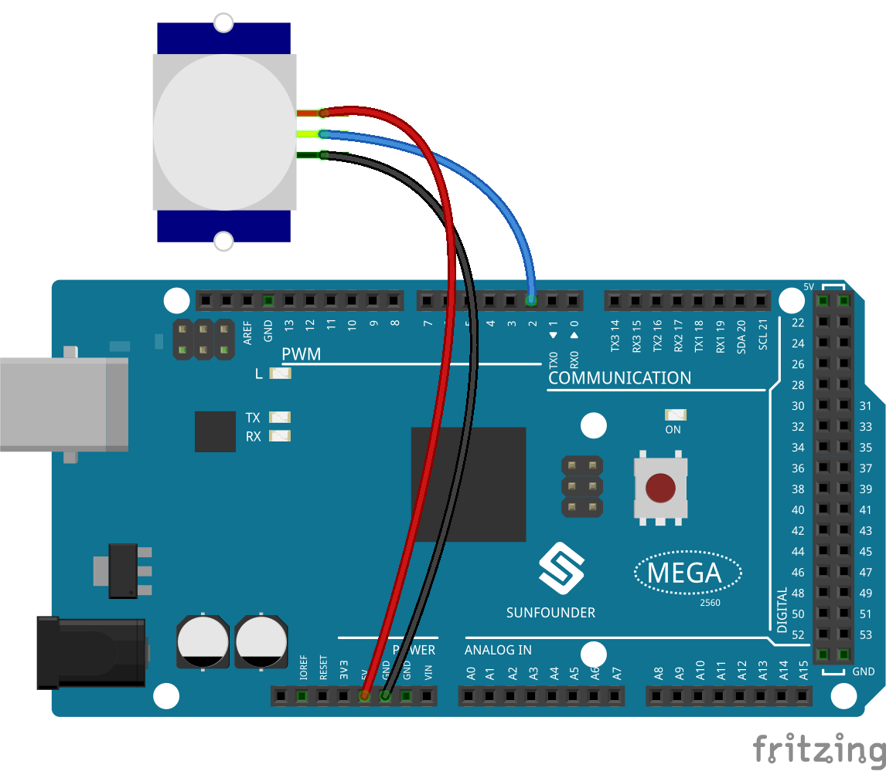

2.31 PIR Module¶
Overview¶
In this lesson, you will learn how to use PIR Module. The PIR sensor detects infrared heat radiation or the presence of organisms that emit infrared heat radiation. This module is widely used in daily life for our intruder alarm and visiting prompt.
Components Required¶

Component Introduction¶

The PIR sensor is split into two slots that are connected to a differential amplifier. Whenever a stationary object is in front of the sensor, the two slots receive the same amount of radiation and the output is zero. Whenever a moving object is in front of the sensor, one of the slots receives more radiation than the other, which makes the output fluctuate high or low. This change in output voltage is a result of detection of motion.
After the sensing module is wired, there is a one-minute initialization. During the initialization, module will output for 0~3 times at intervals. Then the module will be in the standby mode. Please keep the interference of light source and other sources away from the surface of the module so as to avoid the misoperation caused by the interfering signal. Even you’d better use the module without too much wind, because the wind can also interfere with the sensor. Two trigger modes: (choosing different modes by using the jumper cap).
Distance Adjustment

Turning the knob of the distance adjustment potentiometer clockwise, the range of sensing distance increases, and the maximum sensing distance range is about 0-7 meters. If turn it anticlockwise, the range of sensing distance is reduced, and the minimum sensing distance range is about 0-3 meters.
Two trigger modes: (choosing different modes by using the jumper cap).
H: Repeatable trigger mode, after sensing the human body, the module outputs high level. During the subsequent delay period, if somebody enters the sensing range,the output will keep being the high level.
L：Non-repeatable trigger mode, outputs high level when it senses the human body. After the delay, the output will change from high level into low level automatically.
Fritzing Circuit¶
In this example, we can connect the pins of Sound Sensor Module to the pins of Mega 2560 Board directly, and we use digital pin 2 to read the signal of PIR Module. Connect the VCC of PIR Module to 5V, GND to GND, and OUT to digital pin NOTE: you can remove the PIR cover to see the pin mark.
{kind=link}
Schematic Diagram

Code¶
After the codes are uploaded to the Mega2560 board, you can open the serial monitor to see the reading value of the pin. When PIR Module detects activity nearby, the serial monitor will display 「1」; otherwise, it will display 「0」. Check 1.4 Digital Read detail code explanation.
There are two potentiometers on the PIR module: one is to adjust sensitivity and the other is to adjust the detection distance. In order to make the PIR module work better, you need to try to adjust these two potentiometers.
{kind=link}